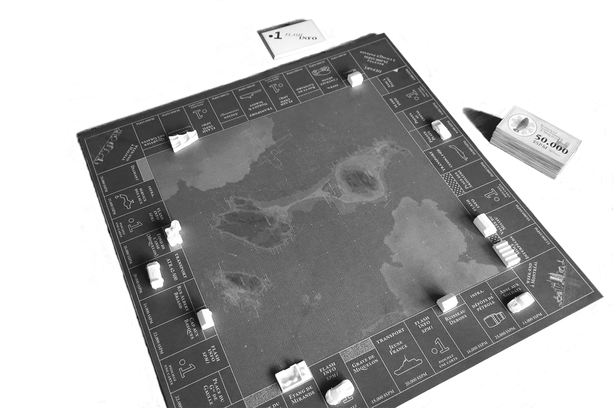

Le MSPM est né le 12 décembre 2018 à 10h44, heure de Saint Pierre. Il provient de la rencontre fortuite, sur une chaise de bureau, entre un esprit fécond, celui plus conventionnel de Noël, et une certaine forme d’ennui.
De quoi s'agit-il ?
Le MSPM est un jeu de société de Saint Pierre & Miquelon, conçu par des amateurs pour des connaisseurs. L’objectif y est plutôt simple : devenir le maître de ces îles. Vos moyens ? Contrôler les transports, investir dans l’énergie, construire des hôtels ou parier sur le logement. Il vous faudra donc choisir vos investissements et compter sur un peu de chance et beaucoup d’instinct pour ruiner vos concurrents.

De quoi ai-je besoin pour y jouer ?
Il est fortement conseillé au joueur :
- d’avoir une connaissance, même sommaire, de Saint Pierre et de Miquelon (pour apprécier pleinement le jeu)
- d’être accompagné d’une à cinq autres personnes
- d’avoir sous la main son plateau de jeu et ses accessoires
Que trouverai-je sur ce site ?
Vous pouvez télécharger ici de quoi fabriquer votre jeu. Il doit comporter les pièces suivantes :
- un plateau de jeu . Le fichier, au format pdf de dimension 50x50cm, est prêt à être imprimé sur une feuille de format raisin (50x65cm) avant découpe.
- l'ensemble des cartes . Le jeu comporte 28 cartes “titre de propriété” et 50 cartes “flash info SPM 1ère”. L'ensemble est regroupé
dans un fichier au format pdf, prêt à être imprimé en recto-verso sur feuilles A3 avant découpe.
- une liasse de dollars saint-pierrais ($SPM) . Le fichier au format pdf est prêt à être imprimé en recto-verso
sur feuilles A3 avant découpe. Il est conseillé d’imprimer dix feuilles pour un plateau, afin que la masse monétaire soit suffisante pour jouer en toute tranquilité.
- les 32 pions bâtiments (10 maisons , 6 bars , 4 hôtels , 3 fermes ,
3 pêcheries , 2 centres commerciaux ,
2 déchetteries , une distillerie et un resort touristique ). Les fichiers, au format stl, sont compatibles avec tout type d’imprimantes 3D.
- les pions joueurs au même format que les bâtiments. 7 pions sont ici proposés à l'impression, mais libre à vous d'en choisir ou d'en créer d'autres.
- la feuille de règle au format pdf, prêtes à être imprimées en recto-verso sur feuilles A3 avant découpe.
Un fichier de cartes modifiables au format pdf est également mis à disposition. À l’aide d’un logiciel open-source comme Inkscape, vous pouvez créer vos propres
évènements et les intégrer à votre jeu. Si le coeur vous en dit et l’informatique ne vous effraie pas, vous pouvez les ajouter au dossier partagé “jeu” afin de les mettre à la disposition des autres joueurs en cliquant sur l'onglet “upload files” en haut de page.
Une question ?
Vous pouvez envoyer un mail à l'adresse suivante